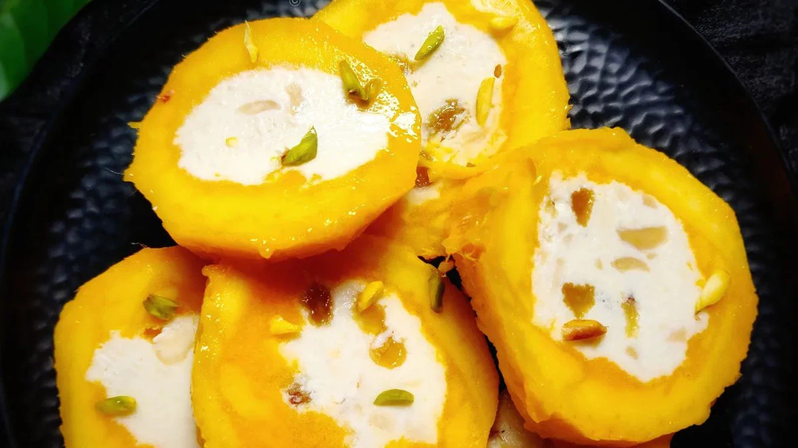

Gulab Jamun
- ¾ cup (100 grams) milk powder, unsweetened
- ½ cup (60 grams) maida / plain flour
- ½ tsp baking powder
- 2 tbsp ghee / clarified butter
- milk (for kneading)
- ghee or oil (for frying)
Ingredients
Process
Step 1:
Boil sugar and water to prepare syrup remove from fire; add cardamom and keep aside to cool.Step 2:
In a mixing bowl put the flour, paneer, sooji, Nestlé MILKMAID , baking powder and baking soda. Mix gently to make a soft dough, do not knead too much.Step 3:
Divide the mixture into 30-35 portions and gently roll into round gulab jamuns. Fry in the oil at very low flame till golden brown in color.Step 4:
Keep putting the fried gulab jamuns in the prepared sugar syrup, once all the gulab jamuns are in the sugar syrup bring it to a boil and remove from flame.Step 5:
Serve warm.
Milk Barfi
- 50 g Butter
- 300 g Milk Powder
- 100 g Sugar
- ½ tsp Cardamom Powder
- 200 ml Milk
- Almonds crushed
- Pistachios crushed
Ingredients
Process
Step 1:
In a greased baking tin add the crushed almonds and pistachios – leave some crushed nuts for the top as wellStep 2:
On low heat add the butter and allow to melt completely.Step 3:
Add the milk and gradually allow it to heat until warmr.Step 4:
Once heated add the milk powder in small increments stirring continuously to break the lumps and keep mixing until everything is incorporated.Step 5:
Add the sugar and cardamom powder then fold the mixture continuously on low heat for 10 minutesStep 6:
Add mixture into the baking tin then top with the remaining almonds and pistachios then leave to set for 1 hour.
cheese Cake
- 1 Biscoff biscuits,crushed
- ¼ Butter,melted
- 1 pack Cream cheese
- 3/4 Powdered sugar
- 3/4 Biscoff spread
- 1 Heavy cream
Ingredients
Process
Step 1:
To begin with, combine Biscoff biscuits and melted butter in a mixing bowl. Gently press this mixture into the bottom of a 9-inch springform pan and refrigerate while you prepare the filling..Step 2:
To make the filling, in a bowl, beat cream cheese and powdered sugar until light and fluffy. Add the Biscoff spread and vanilla extract. Continue to beat the mixture until smooth.Step 3:
In a separate bowl, whip heavy cream until soft peaks form. (This will take around 7-8 mins). Now, fold the whipped cream into the cream cheese mixture until well combined.Step 4:
Pour this filling over the prepared crust and smooth the top with a spatula. Refrigerate the cheesecake for at least 4-5 hours, or until firm.Step 5:
Once it's ready to serve, remove the cheesecake from the springform pan and top it with some more Biscoff spread. Slice into equal portions and garnish with additional biscuits or whipped cream. No-bake Biscoff cheesecake is ready!

Malai Gujiya
- 2 Cups Malai from full fat milk
- 2 cups Maida200 gram Powdered sugar
- 1/2 tsp Cardamom powder
- 1/2 cup Nuts of your choice
- 1/2 cup Desiccated Coconut
Ingredients
Process
Step 1:
Cook malai on stove along with sugar and desiccated coconut, till it is completely dry. Keep it aside.Step 2:
Roast dry fruits in ghee and mix with dry malai.Step 3:
Lightly knead flour with ghee. Then knead it properly with water. Put a final coating of ghee on the kneaded dough. Let it rest for some time.Step 4:
Roll the dough and cut into equal parts. Roll each part into a small roti. Smear maida slurry on all the sides of the roti.Step 5:
Place malai mixture in the centre, and secure the ends to give it the shape of gujiya. Poke a couple of holes in the gujiya with a pin.Step 6:
Fry in ghee.
Mango Kulfi
- 300 Ml full fat milk
- 3-4 mangoes
- 2 tbsp sugar
- Pista or saffron, for garnishing
Ingredients
Process
Step 1:
To make this kulfi, first we need to boil the milk till it reduces to half its original quantity. Now, add sugar and pista and allow it to cool completely. (Boiling the milk may take around 30–40 minutes, so make sure to keep stirring it occasionally.)Step 2:
Meanwhile, remove the seed of the mango while keeping its shape intact. Remove the top part of the mango and keep it aside for later use. Gently squeeze the mango and use a knife to loosen the pulp around the seed. Pull it out and keep it upright in a cup or glass.Step 3:
Fill these mango shells with the prepared kulfi mixture and put the top part of the mango on it. Freeze for 3 to 4 hours, remove the peel, cut it into slices, and serve chilled.

Chana Tikka Masala
- For roasted chana:
- 1 cup Chana
- 1 tsp Lemon juice
- 1 tsp Haldi1 tsp
- 1Red chilli powder
- 1 tbsp Oil
- to taste Salt
- For masala sauce:
- 1 Onion, 2 Tomatoes, chopped
- 6 Cashew nuts
- 1/2 inch Ginger grated, 2 Garlic cloves minced,
- 1.5 tbsp Oil
- 1 tsp Coriander powder
- 1/2 tsp Cumin powder
- 1 tsp Garam masala
- 1/2 tsp Sugar
- 1 tsp Red chilli powder
- 1/2 inch Cinnamon stick
- 3/4 tsp Poppy seeds
- 1/2 tsp Saunf
- 2 Black peppercorns
- 2 Elaichi
- 1/2 tsp Cumin seeds
- For garnishing:Coriander leaves, chopped
Ingredients
Process
Step 1:
To begin with, add chana (chickpea), haldi, red chilli powder, salt, lemon juice and vegetable oil in a bowl. Toss well to coat the chickpeas evenly with all the masalas.Step 2:
In a pan, heat some oil and add the marinated chana. Roast them for 4-5 minutes or until they look slightly charred.Step 3:
Now, we need to prepare the tikka masala sauce. For this, add oil, onion, tomatoes, cashew nuts, ginger, garlic, and all the spices in a separate pan. Roast them until they become soft.Step 4:
Once done, allow the sauce to cool. Transfer to a mixer grinder to form a smooth paste. (You can also add some water at this stage).Step 5:
Now, add the paste to the pan again and let it come to a boil. Add the roasted chana and mix well..

Moong Dal Tikki
- 1 cup moong dal (split yellow mung beans)
- 1 small onion, finely chopped
- 2 green chillies, finely chopped
- 1 teaspoon ginger, grated
- 1 teaspoon garlic, grated
- 1 teaspoon cumin powder
- ½ teaspoon turmeric powder
- ½ teaspoon red chilli powder (adjust to your spice preference)
- Salt to taste
- Oil for shallow frying
Ingredients
Process
Step 1:
TWash the moong dal thoroughly under running water. Then, soak the dal in enough water for about 2-3 hours.Step 2:
Drain the water and transfer the dal to a blender or food processor. Grind the dal to a coarse paste.Step 3:
In a mixing bowl, combine the ground moong dal with finely chopped onion, green chillies, grated ginger, cumin powder, turmeric powder, red chilli powder, and salt. Mix well to ensure all the ingredients are evenly incorporated.Step 4:
Now, take a small portion of the mixture and shape it into a round patty, pressing gently to flatten it slightly. Repeat this process with the remaining mixture, shaping all the tikkis.Step 5:
Heat a non-stick pan over medium heat and add a small amount of oil for shallow frying. Cook the tikkis for about 3-4 minutes on each side until they turn golden brown and crispy.

Cheese Paratha
- For Paratha:1
- cup Atta/maida
- 1/2 tsp Red chilli powder
- 1/2 tsp Ajwain
- 1/2 tsp Salt
- 1 tsp OilWater, to knead
- For Stuffed Cheese Paratha:
- 1 roundel Paratha
- 2 tbsp Mozzarella cheese, grated
- 1 tbsp Butter
- For Chilli Cheese Paratha:
- 1 roundel Paratha
- 2 tbsp Mozzarella cheese, grated
- 1/2 tsp Chilli flakes
- 1 tsp Garlic powder
- 1/2 tsp Oregano1 tbsp Butter
- For Cheese Paratha Taco:
- 1 Paratha1 tbsp Chilli cheese paratha mix (as mentioned above)
- 3-4 Jalapenos
- 3-4 Olives
- 1 tbsp Boiled shredded chicken/crumbled paneer
- 1 tbsp Sauted veggies of your choice
Ingredients
Process
Step 1:
For paratha, knead a dough with the mentioned ingredients. Cover with a moist cloth and let it rest for at least 15 minutes.Then cut small roundels from the dough.Step 2:
For stuffed cheese paratha, take a roundel and roll it flat. Add the grated cheese at the centre.Tuck in the edges well and roll it again. Now, heat pan and fry the paratha with butter.Step 3:
For chilli cheese paratha, make a paratha on tawa. Prepare a mix with cheese, chilli flakes, and oregano and garlic powder. Spread it all over the paratha and keep it on tawa. Lower the flame and close the lid and let the cheese melt. Cut the paratha into four pieces and indulge.Step 4:
For cheese paratha taco, make a paratha. Spread some butter on one side. Add crumbled paneer or shredded chicken and sauted veggies. Top with chilli-cheese mix, jalapeno and olives and fold it from the centre. Now, cook the folded paratha with butter until it turns crispy. Serve hot with ketchup.